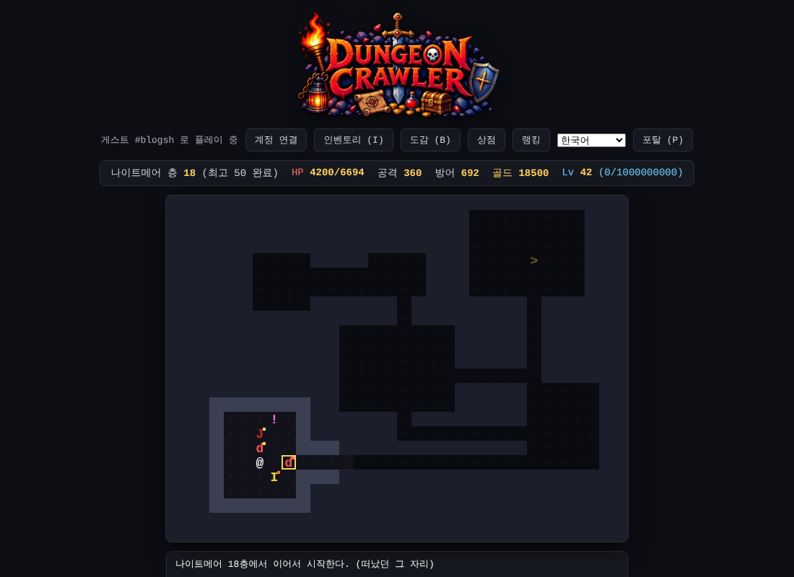

75층으로 줄이고, 나이트메어를 열다
오늘은 정말 많은 걸 바꾼 날이에요. 너무 길었던 일반 던전을 75층으로 줄이고, 그걸 끝낸 사람이 갈 새 목표인 나이트메어 던전을 열었어요. 저녁과 밤에는 직접 해 본 피드백을 받아서 세트 밸런스와 골드 경제를 계속 다듬었어요.
랭킹 정리부터
v3 베타 때 장비를 그대로 낀 채 1층부터 다시 내려가면 v4 베타 랭킹에 기록이 올라가는 문제가 있었어요. 그래서 규칙을 하나 정했어요.
- 이번 판에서 예전(v3까지) 장비를 한 번이라도 끼면, 그 판은 v4 베타 랭킹에 기록하지 않아요
- 가방에 보관하거나 거래소에 파는 건 괜찮아요
- 끼는 순간 안내가 뜨고, 다시 빼도 그 판은 계속 제외예요. 예전 장비 없이 1층부터 새로 시작하면 다시 기록돼요
- 서버도 한 번 더 확인해서 막아요
150층은 너무 길었어요: 75층 + 드롭 증가
150층을 끝까지 가려면 몬스터를 약 17,700마리나 잡아야 했어요. 그래서 75층(약 4,650마리)으로 줄였어요. 대신 드롭을 크게 늘려서, 75층까지만 가도 예전 150층만큼 좋은 장비가 나오게 했어요.
- 일반 몬스터 드롭 8% → 15%, 정예 40% → 60%
- 황금 고블린 출현 12% → 20%, 보스 장비 1개 → 2개
- 몬스터 레전더리 1% → 2.5%, 세트 0.5% → 1% / 보스 레전더리 5% → 9%, 세트 2% → 4%
드롭 확률이 바뀌면 같은 시드에서 다른 아이템이 나오기 때문에 규칙 개정 번호(r2)를 붙였어요. 이미 가진 아이템은 그대로 지켜져요. 이미 하던 사람에게는 게임을 막는 창 대신, 닫을 수 있는 업데이트 안내 줄을 화면 위에 띄웠어요.
나이트메어 던전
로비 오른쪽에 "준비 중"이던 건물이 드디어 나이트메어(▼) 입구가 됐어요. 일반 던전 75층을 완료하고, v4 이후 장비만 낀 사람이 들어갈 수 있어요.

- 50층 구성, 아이템 레벨 76~125
- 랭킹에 나이트메어 탭이 따로 생겼어요
- 50층 보스를 깨면 "나이트메어 완료!"
속성과 저항
나이트메어 몬스터는 속성을 하나씩 가져요.
- 불: 10턴 동안 2턴마다 피해를 주는 화상. 다시 맞으면 중첩 대신 갱신만 돼요
- 얼음: 25% 확률로 4턴 동안 느려짐(2턴에 한 번만 행동). 풀리면 4턴 동안 면역
- 번개: 내가 걸면 근처 몬스터 2마리에게 튕기고, 몬스터가 걸면 내가 한 번 더 맞아요
나이트메어에서 얻은 아이템에는 속성 피해와 속성 저항 줄이 붙을 수 있고, 저항은 속성마다 최대 75%예요. 이름 앞에는 "악몽의 불 레전더리 단검"처럼 "악몽의 (속성)"이 붙어요.
처음 설계대로 시뮬레이션해 보니 얼음이 너무 셌어요. 맞을 때마다 다시 걸려서 계속 느린 상태가 됐거든요. 그래서 확률과 면역 시간을 넣었어요. 몬스터가 거는 화상·번개도 처음엔 방어력을 무시해서 너무 아팠는데, 방어력으로 줄어든 피해를 기준으로 바꿨어요.
포션, 보물, 포탈
- 포션은 개수 제한 없이 10턴마다 한 번, 최대 HP 30% 회복. 시뮬레이션해 보니 쓰러지는 건 포션이 모자라서가 아니라 두세 턴 안에 크게 맞아서였어요
- 바닥의 포션 자리(!)는 보물로 바뀌었어요. 주우면 레어 이상 장비 1개. 1~75층 한 번에 레전더리·세트가 약 30% 더 나와요
- 포탈(P)은 바로 로비로 가고, 로비의 파란 포탈로 떠난 자리에 돌아가요
- 포탈로 로비에 오면 HP가 가득 차고 쿨타임·화상·느려짐도 풀려요. 위험하면 포탈 → 회복 → 다시 싸우기를 할 수 있어요
- 던전 입구 오른쪽 문은 최고 층 − 10층부터 시작해요. 보스를 다시 잡으며 파밍할 수 있어요
처음엔 "옆 칸에 포탈을 열고 걸어 들어가기"로 만들었는데, 시뮬레이션해 보니 여는 턴에 맞아 쓰러지는 경우가 늘어서 바로 가는 방식으로 되돌렸어요.
세트가 너무 강했어요
직접 해 보니 40층쯤에 시험의 세트 5부위 + 광란 2를 맞추면 75층까지 그대로 깰 것 같다는 피드백이 나왔어요. 시뮬레이션해 보니 정말 그랬고, 원인은 레벨과 상관없는 흡혈 38%였어요. 흡혈만 상한이 없었거든요. 코드를 보다가 흡혈이 넘친 피해까지 계산되고 있던 것도 찾았어요.
- 흡혈은 장비·세트를 합쳐 최대 20%, 그리고 실제로 깎은 HP만큼만
- 시험의 세트 5세트: 흡혈 +8% → 받는 피해 −10%
- 광란의 세트: 주변 피해 100% → 50%
이제 40레벨 세트는 65층까지는 괜찮지만, 75층 보스에서는 높은 레벨 장비로 바꿔야 해요. 깊은 층에서 다시 세트를 맞추는 목표가 생긴 거죠.
골드 쓸 곳, 모을 곳
53층쯤에서 골드가 남아돈다는 피드백이 있었어요. 그래서 골드를 쓸 곳과 모을 곳을 같이 만들었어요.
- 고대 다시 굴리기: 고대가 아닌 레전더리·세트를 골드로 다시 굴려 5% 확률로 고대. 아이템마다 20번까지예요. 비용은 처음엔 상점 가격이었는데 너무 비싸서 1/3로 낮췄어요
- 판매 골드: 장비를 팔면 강화석과 함께 골드도 조금 받아요 (50레벨 레전더리 235골드)
- 로비 시간 상점: 던전 상점과 같은 진열이 매 시간 정각에 바뀌어요. 진열은 사람마다 달라요
- 골드 던전: 75층을 완료하면 열려요. 75층 난이도에 장비는 안 나오지만 완료하면 22,400골드. 75레벨 레전더리를 고대 굴리기 20번 할 수 있는 금액이에요
인벤토리도 손봤어요. 넓은 화면에서는 아이템 상세가 오른쪽에, 휴대폰에서는 아래에서 올라오는 창으로 보여요.
나이트메어 다듬기
밤에는 나이트메어를 실제로 해 보면서 나온 문제를 계속 고쳤어요.
- 들어가자마자 쓰러졌어요. 층을 40번 만들어 세어 보니 시작 6칸 안에 평균 9.3마리가 있었어요. 1층 20마리부터 천천히 늘려 41층부터 50마리가 되게 바꿨어요
- 세트에서 한 부위만 바꿔도 5세트 효과가 꺼져서 바꿀 수가 없었어요. 나이트메어 아이템을 세트 부위로 인정하는 안도 있었지만, 그러면 세트 효과만 중요해져요. 대신 나이트메어 아이템의 주 능력치(공격력·방어력·최대 HP)를 ×3으로 강하게 했어요. 이미 가진 나이트메어 아이템도 바로 적용돼요
- 나이트메어 아이템은 상점 가격·진열 바꾸기·강화석·고대 굴리기 비용이 모두 ×2
- 악몽 강화석: 일반 강화석으로 나이트메어 아이템을 바로 +10 하는 걸 막으려고, 나이트메어 아이템은 그걸 팔아서 나오는 악몽 강화석으로만 강화해요
- 시간 상점과 골드 던전도 나이트메어 진행에 맞췄어요. 골드 던전 오른쪽 문은 나이트메어 최고 층 난이도로, 보상도 더 커요
마지막으로 "보통 장비로도 5층 보스는 잡을 수 있어야 한다"는 기준을 세우고 다시 재 보니, 그동안은 잘 맞춘 장비 기준으로만 맞춰져 있어서 보통 장비로는 1층 보스에게도 거의 다 쓰러졌어요. 그래서 앞쪽 층은 천천히, 깊을수록 가파르게 세지도록 몬스터 배율을 바꿨어요.
시뮬레이션에서 배운 것
Claude와 함께 시뮬레이션을 돌리면서 배운 것도 많았어요.
- 포션을 턴을 쓰지 않고 마신다고 계산하면 실제보다 훨씬 쉽게 나와요
- 난이도에는 포션 개수보다 몬스터 공격 배율이 훨씬 크게 영향을 줘요. 보스 공격 ×1.3 → ×1.1만으로 1층 보스에게 쓰러질 확률이 29% → 4%
- 둘러싸이면 위험하고, 통로에서 한 마리씩 상대하면 안전해요
그리고 바뀐 내용은 모두 서버에도 반영하고 확인했어요.
다음에는
나이트메어에서 버는 골드가 아직 적다는 이야기가 나오고 있어요. 다음에는 나이트메어 경제와 새 세트를 손볼 예정이에요. 바뀐 던전은 던전 크롤러에서 직접 해 볼 수 있어요!